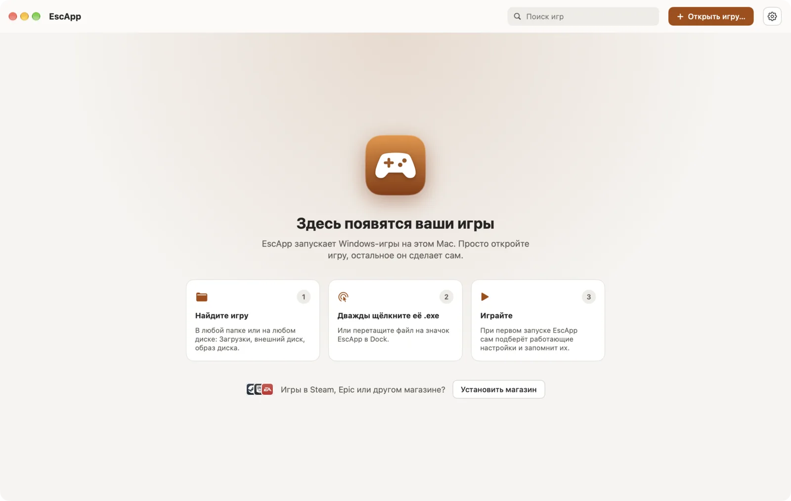
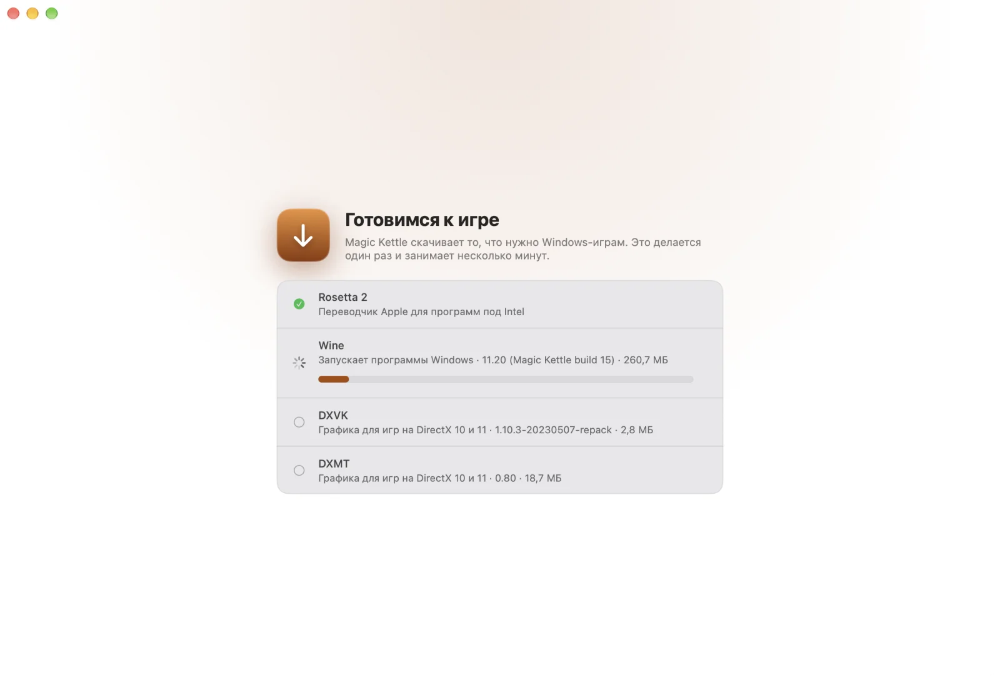

EscApp
EscAppКак это работает
От вас нужно одно: открыть игру. Всё остальное — забота EscApp. Не надо выбирать настройки, читать инструкции и ставить Windows.
Вы открываете игру
Двойной клик по её .exe в Finder или перетащите папку игры на EscApp. Установщики тоже подходят.
EscApp разбирается сам
Он смотрит, как устроена игра, ставит всё, что ей нужно, и перебирает настройки, пока игра не пойдёт хорошо. Сам, пока вы немного ждёте.
Вы играете
Удачные настройки запоминаются, и дальше игра просто запускается.
Как это выглядит
Всё приложение — это библиотека ваших игр. Больше ничего изучать не придётся.


Не мешает играть
Всё, чего ждёт Windows-игра, EscApp делает за вас и без лишних вопросов.
DirectX 9, 10 и 11
EscApp смотрит, как устроена игра, и выбирает, как рисовать её через Metal. Не вышло — пробует следующий вариант.
Компоненты ставятся сами
Visual C++, .NET и пакеты RPG Maker берутся у их издателей и только тогда, когда они нужны игре.
Сохранения в одном месте
У всех игр общий профиль: сохранения и настройки никуда не денутся, сколько бы игр вы ни добавили.
Старые игры крупнее
Игры для маленьких экранов EscApp аккуратно увеличивает, а не переключает разрешение экрана Mac.
Японские игры
Игры для японской Windows запускаются с нужным языком и шрифтами, и текст в них читается.
Приватно и открыто
Ничего о вас и ваших играх никуда не отправляется. Каждая загрузка сверяется с заранее записанным отпечатком. Код под лицензией Apache-2.0.
Работает уже сейчас
Бесплатно и с открытым кодом. С каждым обновлением игр и возможностей становится больше.
- Уже работает: игры на DirectX 9–11 и Unity, RPG Maker XP/VX/VX Ace, игры, которым нужны Visual C++ или .NET.
- Магазины: Steam, Epic Games Store, GOG Galaxy, EA app и Ubisoft Connect ставятся одной кнопкой.
- Потом: DirectX 12.
- Нужен: Mac с Apple Silicon и macOS 15 или новее.